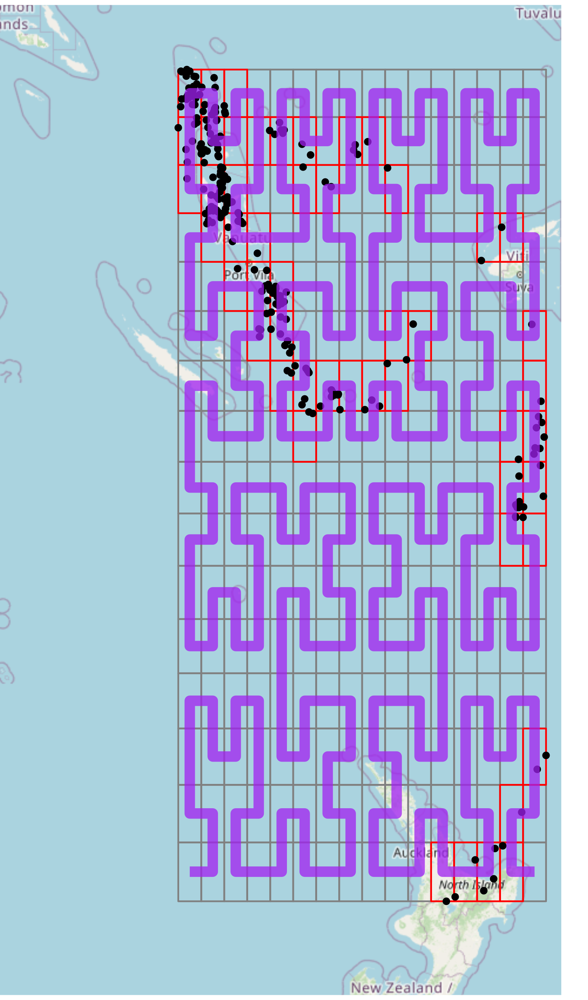

The core utilities provided by hilbert involve converting coordinates to grid positions, then grid positions to indices on a Hilbert Curve. This conversion is done without respect to coordinate reference systems (CRS), but, the CRS of the original coordinates coincides with the decoded coordinates.
Example Dataset
Let’s traverse through a simple example of using hilbert. We’ll use a dataset of 1000 seismic events (with some filtered off) that occurred near Fiji since 1964 (see: quakes)
data("quakes")
quakes <- quakes[quakes$long < 179.5, ]| lat | long | depth | mag | stations | |
|---|---|---|---|---|---|
| 7 | -11.70 | 166.10 | 82 | 4.8 | 43 |
| 12 | -12.26 | 167.00 | 249 | 4.6 | 16 |
| 15 | -20.70 | 169.92 | 139 | 6.1 | 94 |
| 17 | -13.64 | 165.96 | 50 | 6.0 | 83 |
| 22 | -10.98 | 166.32 | 211 | 4.2 | 12 |
| 27 | -14.72 | 167.51 | 155 | 4.6 | 18 |
Encoding Process
Extent
:::{style=“display:flex;align-items:center;”}

::::::{} When exploring this dataset, we see that it is particularly suitable for indexing on a space-filling curve, due to the closeness of points. To index these points, we’ll perform the following operations:
- Get the extent of the dataset.
- Find the position of each point.
- Convert the position to the curve index.
Getting the extent of this dataset is easy, it is simply the min/max of both the X and Y coordinates.
extent <- c(xmin = min(quakes$long), ymin = min(quakes$lat),
xmax = max(quakes$long), ymax = max(quakes$lat))| X-Min | Y-Min | X-Max | Y-Max |
|---|---|---|---|
| 165.67 | -38.59 | 179.43 | -10.72 |
::::::
:::
Note: closeness is often subjective. Generally, the real factor for determining how suitable coordinates are for indexing to a space-filling curve is the precision requirements. In this case, the precision of seismic events need not be highly-precise. However, in the case of coordinates for buildings, then high-precision is usually a requirement.
Position
Now that we have the extent of these coordinates, let’s get the position.
positions <- hilbert::coords_to_position(
x = quakes, # Using the `data.frame` method
coords = c("long", "lat"), # Either the column names or indices for the coordinates
n = 4L, # Dimensions exponent, i.e. 2^n x 2^n grid
extent = extent, # The previously found extent
attach = FALSE # When `TRUE`, attaches to the original `data.frame`
)| X-Position | 0 | 1 | 4 | 0 | 0 | 2 | 15 | 1 | 15 | 4 | 4 | 12 | 4 | 0 | 8 | 15 | 7 | 0 | 0 | 1 | … |
| Y-Position | 15 | 15 | 10 | 14 | 15 | 13 | 9 | 12 | 7 | 11 | 11 | 0 | 11 | 15 | 9 | 8 | 14 | 15 | 15 | 15 | … |
Notice here, we choose \(n = 4\). In the context of our grid, \(n\) is the dimensions exponent. It determines the dimensions of our underlying grid, such that when \(n = 4\), we have a \[2^n \times 2^n = 2^4 \times 2^4 = 16 \times 16 \text{ grid.}\] A \(2^n \times 2^n\) grid is required due to the construction of a Hilbert Curve, see: Space-filling Curves.
Now that we have our positions, we can visually see the cells that each point falls into. Since the grid in this case is coarse, many points will be indexed to the same cell, for example, the upper left-most cell.
This can be either unwanted or beneficial. If you’re using a space-filling curve for a spatial index, this could be beneficial, since points that are closer together will be indexed together, and hence, spatial operations can be improved to only work on points that fall under the same index. For more information, see: Spatial Index.
If we want to make our grid finer, we can increase the \(n\) value used. For example, setting \(n = 6\) will give us a \(64 \times 64\) grid, which will segement the points further.

Index
At this point, we can now index our positions. To do this, we simply take our positions data frame, and call hilbert::index.
The same \(n\) must be used in both hilbert::coords_to_position and hilbert::index, otherwise, the indexing calculations will be incorrect.
| X-Position | 0 | 1 | 4 | 0 | 0 | 2 | 15 | 1 | 15 | 4 | 4 | 12 | 4 | 0 | 8 | 15 | 7 | 0 | 0 | 1 | … |
| Y-Position | 15 | 15 | 10 | 14 | 15 | 13 | 9 | 12 | 7 | 11 | 11 | 0 | 11 | 15 | 9 | 8 | 14 | 15 | 15 | 15 | … |
| Index | 85 | 86 | 118 | 84 | 85 | 93 | 190 | 81 | 192 | 117 | 117 | 240 | 117 | 85 | 129 | 191 | 107 | 85 | 85 | 86 | … |

This index corresponds to the cell along the (purple) curve starting from the lower left cell, to the lower right cell.
We see here that space-filling curves provide a \({X, Y} \rightarrow I\) mapping.
Another attribute of these indices, is that they are always non-negative, whole numbers.